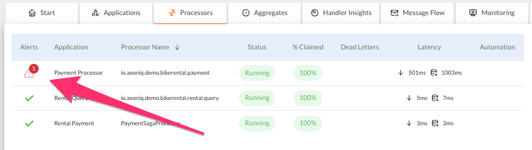

Detecting a Slow Event Handler
This example shows how the AxonIQ Console can help us identify one or more event handlers performing poorly on our system.
Generate a slow event handler
The first thing we need is a slow event handler. In this case, we will use the AxonFramework Firestarter to manually configure some delays in the payment module’s event handlers.
Access to the /fire-starter/ endpoint of your 'Payment' module.
| Remember the last slash in the URL. Otherwise, you may get an error saying the page does not exist. |
|
Accessing the Firestarter Config page of your Payment module
If you use the If you are using the Docker-based |
Click the 'Event Handlers' button under the 'Events' category. Configure a fixed delay of 200 ms for all the Event Handlers in the Payment module and click the 'Save taints' button.
Soon after applying your configuration to have a fixed delay in the event handlers AxonIQ Console will detect this delay and display indicators in various places. Let’s see the different places where this abnormal performance is displayed.
The applications tab
We can start with the Applications tab, where, by default, we may not see any abnormal indicator.
If we drill down a bit and click on the Payment Processor application to access the module’s details view, we will see the list of the top five slowest handlers, which also shows the two high-latency event handlers.
When we click on either of these two slow event handlers, we are taken to the 'Handler Insights' tab with the details view for this processor loaded.
The processors tab
In the Processors tab, we can also see that the Payment Processor application has a high latency.
|
If you upgrade to one of the paid tiers of the AxonIQ Console, you will enable alerts and monitoring, and the main Processor tab will display an alert near the module that displays slow handlers:

|
| If you are looking for bottlenecks or slow handlers, click on the 'Latency' column to order the different processors, starting with the one with the highest latency. |
Clicking on the 'Payment Processor' row will load that processor’s detailed view, giving you access to more information that might explain, or at least give you more context, why this high latency is produced.
In this detail view, the 'Processor Statistics' graphs show when the latency started to increase, showing its evolution over the last period of time.
|
You can also check the rest of the Processor Statistics graphs to add more context to the problem. The high latency may correspond to fewer nodes available at any given time (which means you need to scale out your application again by adding more nodes). You can also review the Processor Statistics graph with some of the Application Statistics graphs showing system CPU usage or bus capacity. These additional graphs may explain other reasons for high latency. |
In our case, the high latency is due to our explicit delay configuration in AxoFramework Firestarter, so the other graphs will not show any variation.
If none of the other graphs add any context to the high latency, the scenario corresponds to a slow algorithm that needs to be fixed in the event handlers (or, in our case, the manually added delay in AxonFramework Firestarter needs to be removed).
The handler insights tab
If you click the Handler Insights tab, you will see these two event handlers with high latency.
| If you are looking for slow handlers, you can sort them by the time it takes to process the events by clicking one of the column headers that show the execution time (min, median, ninetieth percentile, or max). |
When you click on one of the slow handlers, the details view for that handler displays different graphs showing its evolution and total time.
You can use the different graphs to add more context and see if there is another graph that also explains why the high latency is being produced (such as a sudden increase in the message rate, a change in the number of online nodes, or a sudden change in the system CPU usage).
Remember that you can always click on any graphs to view them in more detail.
| In this graph, you can see how the different statistic values increase at different times. The maximum latency value is captured immediately after the delay is configured in AxonFramework Firestarter, while the average, ninetieth percentile, and minimum values take longer to rise. |
Alerts in the start tab
If you upgrade your AxonIQ Console subscription to one of the paid plans you will have access to the notification and alerting features.
This feature means that issues will be more visible in the form of alerts right from the home page.
The alerts will also be displayed in any tab that displays information relevant to the module or component that is not behaving correctly.
Alerts in the Monitoring tab
The Monitoring tab gives you a single view of any alerts or warnings detected on your system.
image::ac-alerts-monitoring-tab.png[alt="Screenshot of the Monitoring tab of the AxonIQ Console dashboard showing some of the alerts and warnings detected on your system"].
You can also configure custom parameters to trigger these notifications or alerts using the Conditions section, which allows you to configure the thresholds in various metrics used to activate these alerts.
This configuration applies to all components in your system. Still, AxonIQ Console also allows you to fine-tune these conditions for specific components, such as a particular event handler in a specific module. This configuration can be done through the details view of the component you want to customize, but the Monitoring tab allows you to see a list of all these specific configurations that override the global conditions through the Overrides section of the Monitoring tab.
In addition, you can configure notifications or integrate with other tools you may already be using for this purpose, such as Slack, PagerDuty, or email. This configuration can be done from the Integrations section of the Monitoring tab.